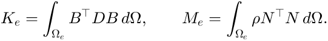
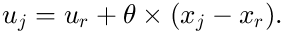
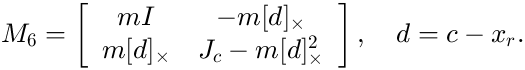
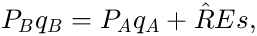

Formulation
A summary of the methods behind fembd.
Contents
Elements
Isoparametric Tet4 and Tet10 elements, small-strain linear elasticity, with

Integrals use collapsed (Duffy) Gauss rules that are exact for straight-sided elements. Element matrices are computed in vectorised blocks. Lumped mass uses HRZ lumping.
Ties
Slave nodes are projected onto the closest master face (barycentric point xi) and constrained by u_s = sum_j N_j(xi) u_m,j. Elastic interfaces add K += G'*Ds*G, with the gap g = G*u and Ds = A_i (kn n n' + kt (I - n n')) per slave node of area A_i.
Rigid bodies and couplings
Every node of a rigid body or coupling follows its reference point:

For mesh-free rigid bodies, the 6 x 6 mass about x_r is

Joints
With P = [I, -[p - x_r]x; 0, I] the motion of a reference point at the joint point p, a joint requires

where E selects the released directions in the joint frame R and s are the joint coordinates. In a tree, q_B is eliminated. A cut joint (closed loop) gives s = (R E)' (P_B q_B - P_A q_A) and constraint rows (R E_c)' (P_B q_B - P_A q_A) = 0.
Constraint elimination
Dependent dofs (tie slaves, nodes of rigid bodies and couplings, B sides of joints) and supported dofs are eliminated: u = T q with T(I,:) = I and T(S,:) = R(:,I), after resolving chains. Cut-joint rows C q = 0 are then removed by coordinate partitioning: dependent columns are chosen greedily (non-joint dofs first, then later joints before earlier ones), each only if it raises the rank, and q_d = -C_d^+ C_i q_i. Finally K = T'*Kfull*T and M = T'*Mfull*T.
Eigenvalues and reduction
fembd.modes uses shift-invert Lanczos with a small negative shift scaled to the softest dofs. fembd.craigBampton combines static constraint modes and fixed-interface modes.
The full manual with all details is docs/fembd.md in the toolbox folder.